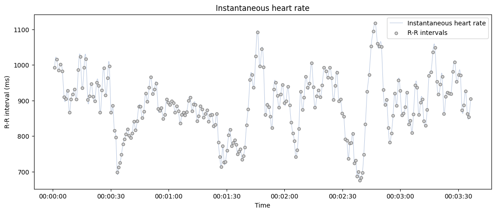
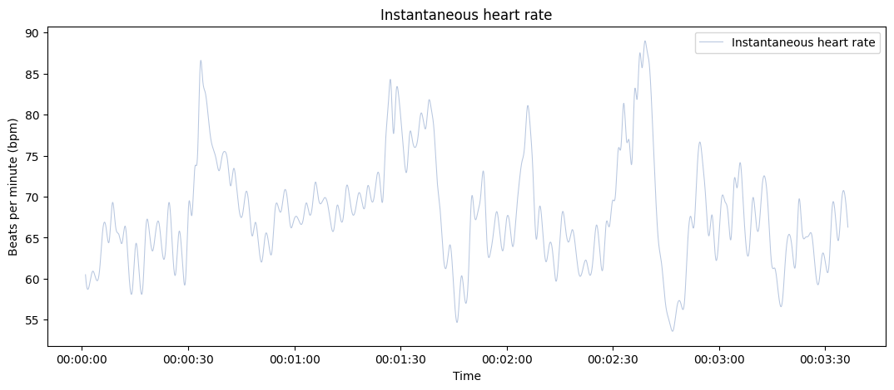

systole.plots.plot_rr#
- systole.plots.plot_rr(rr: Union[List, ndarray], unit: str = 'rr', kind: str = 'cubic', line: bool = True, points: bool = True, input_type: str = 'peaks', show_artefacts: bool = False, bad_segments: Optional[Union[ndarray, List[Tuple[int, int]]]] = None, show_limits: bool = True, slider: bool = True, ax: Optional[Axes] = None, figsize: Optional[Union[Tuple[float, float], int]] = None, backend: str = 'matplotlib', events_params: Optional[Dict] = None) Union[Axes, figure][source]#
Plot instantaneous heart rate time series.
- Parameters
- rr
Boolean vector of peaks detection, peaks indexs or RR intervals.
- unit
The heart rate unit in use. Can be ‘rr’ (R-R intervals, in ms) or ‘bpm’ (beats per minutes). Default is ‘rr’.
- kind
The method to use (parameter of scipy.interpolate.interp1d). The possible relevant methods for instantaneous heart rate are ‘cubic’ (defalut), ‘linear’, ‘previous’ and ‘next’.
- line
If True, plot the interpolated instantaneous heart rate.
- points
If True, plot each peaks (R wave or systolic peaks) as separated points
- input_type
The type of input vector. Default is “peaks” (a boolean vector where 1 represents the occurrence of R waves or systolic peaks). Can also be “peaks_idx”, the idexs of samples where a peaks is detected, “rr_s” or “rr_ms” for vectors of RR intervals, or interbeat intervals (IBI), expressed in seconds or milliseconds (respectively).
- show_artefacts
If True, the function will call
systole.detection.rr_artefacts()to detect outliers intervalin the time serie and outline them using different colors.
- bad_segments
Mark some portion of the recording as bad. Grey areas are displayed on the top of the signal to help visualization (this is not correcting or transforming the post-processed signals). If a np.ndarray is provided, it should be a boolean of same length than signal where False indicates a bad segment. If a list is provided, it should be a list of tuples shuch as (start_idx, end_idx) for each bad segment.
Note
The start and end points should be expressed as peaks indexes.
- show_limits
Use shaded areas to represent the range of physiologically impossible R-R intervals. Defaults to True.
- slider
If True, add a slider to zoom in/out in the signal (only working with bokeh backend).
- ax
Where to draw the plot. Default is None (create a new figure).
- figsize
Figure size. Default is (13, 5).
- backend
Select plotting backend {“matplotlib”, “bokeh”}. Defaults to “matplotlib”.
- events_params
(Optional) Additional parameters that will be passed to
systole.plots.plot_events()and plot the events timing in the backgound.
- Returns
- plot
The matplotlib axes, or the boken figure containing the plot.
See also
Examples
Plot instantaneous heart rate from a RR interval time series (in milliseconds).
from systole import import_rr from systole.plots import plot_rr # Import R-R intervals time series rr = import_rr().rr.values plot_rr(rr=rr, input_type="rr_ms");
Only show the interpolated instantaneous heart rate, add a bad segment and change the default unit to beats per minute (BPM).
plot_rr(rr=rr, input_type="rr_ms", unit="bpm", points=False);
Use Bokeh as a plotting backend, only show the scatterplt and highlight artefacts in the RR intervals.